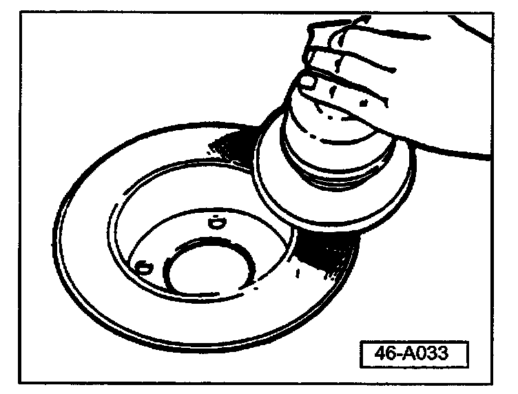
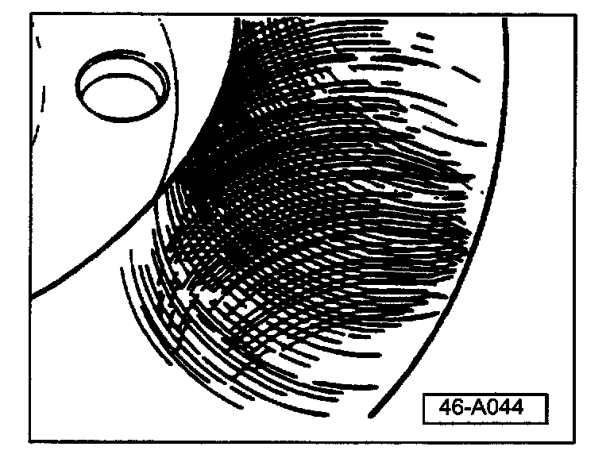
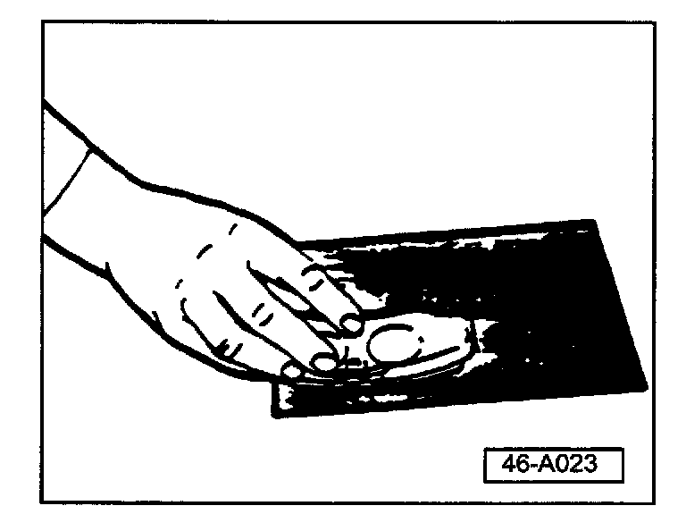
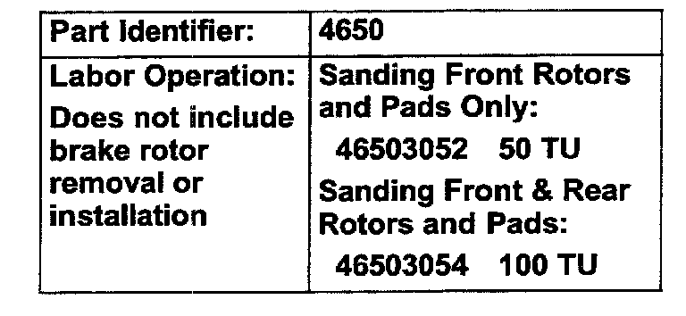

Brakes - Vibration When Braking
Group: 46Number: 04-02
Date: Sept. 9, 2004
Subject:
Customer States "Vibration When Braking"
Model(s):
All with Disc Brakes 2003 --> 2005
Condition
Vibration when braking may be due to brake rotor corrosion protection which has not been completely removed by normal braking.
Required Materials
^ 6-inch Dual Action sander (Blue Point(R) Stock No. AT411A) or equivalent.
^ 4 40-grit 6-inch sanding discs (3M(R) Part No. 9184NA) or equivalent (obtain from local supplier).
^ 4 80-grit 6-inch sanding discs (3M(R) Part No. 9183NA) or equivalent (obtain from local supplier).
^ 80-grit sand paper (obtain from local supplier).
^ Micrometer capable of measuring from 7 mm-22 mm.
^ Metric scale capable of measuring from 0 mm-20 mm.
Vehicle Inspection
Note:
Type of vibration covered in this Technical Bulletin must be corrected within the first 5,000 miles of vehicle service.
- Check and adjust tire pressures.
- Accelerate vehicle to greater than 55 MPH.
CAUTION!
Please abide by ALL traffic laws and be mindful of the vehicles around you.
Perform all operations at your own risk.
- Apply brakes firmly.
^ Vehicles requiring front rotor cleaning will exhibit vibration.
- Accelerate vehicle to 30 MPH.
- Carefully apply parking brake.
If vibration is observed:
- Clean all front and rear brake rotors.
If vibration is not observed:
- Clean only front rotors.
Service
Disassembly & Inspection
- Remove wheels, disassemble brake calipers and remove brake discs. See appropriate Repair Manual for vehicle you are servicing.
- Mark rotors for reinstallation (Left/Right).
- Mark brake pads for reinstallation (Left/Right, Inner/Outer).
- Inspect all brake components for damage due to outside influence.
- Using micrometer, measure rotor thickness. See appropriate Repair Manual for minimum brake rotor thickness.
Note:
Affected rotors will have uneven color across the friction surfaces.
Rotor Surface Cleaning
Remove remaining corrosion protection coating as follows:

- Sand rotor surfaces until clean metal is visible using 40-grit sanding disc in a clockwise direction using leading edge of sanding disc (1-2 minute per surface).
^ Replace sanding disc prior to moving to next rotor surface.

To achieve a crosshatch pattern:
- Repeat sanding process using 80-grit sanding disc in a clockwise direction using trailing edge of sanding disc.
^ Replace sanding disc prior to moving to next rotor surface.
- Clean all rotor friction surfaces.
Note:
Rotors must be free of dust and particles left from the sanding process.
Deglaze and Clean Brake Pads

- Place 80-grit sand paper on flat hard surface.
- Carefully sand brake pad until surface glazing is removed.
- Measure brake pad thickness using metric scale.
If any brake pad is equal to or less than 50% of original thickness of new pads (excluding backing plate).
- Replace all 4 brake pads on axle you are servicing.
Note:
See appropriate Repair Manual for new brake pad thickness dimensions.
Reassembly
- Install brake rotors, brake pads, calipers and wheels. See appropriate Repair Manual for vehicle you are servicing.
- Road test vehicle to confirm vibration concern is corrected.

When procedure applies to vehicles within the New Vehicle Limited Warranty, use the table.